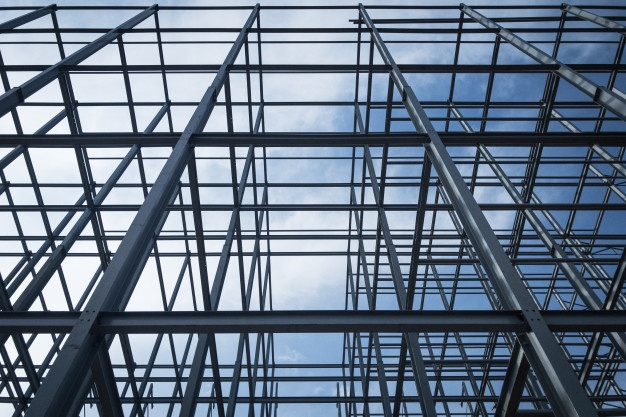

Las estructuras son el conjunto de elementos que forman la parte resistente de una construcción. En el sistema estructural de acero, un marco compuesto principalmente por columnas y vigas de acero sostiene el suelo, techo y paredes de un edificio.
Las estructuras de acero tienen un papel fundamental en la industria de la construcción, ya que sin estas no se podrían levantar edificaciones fuertes y de gran durabilidad.

El diseño y construcción de estructuras de acero para edificios ordinarios en Estados Unidos y en varios países de América
latina, México incluído, se efectúa hoy en día con la especificación ANSI/AISC 360-16. (los estados fuera de la Ciudad de México)
Página AISC AMERICAN INSTITUTE OF STEEL CONSTRUCTION
El acero es una aleación de hierro y carbono que contiene menos del 2% de carbono y 1% de manganeso y pequeñas cantidades de silicio, fósforo, azufre y oxígeno.
El acero es 1.000 veces más fuerte que el hierro.
Fabricación del acero
Los 6 pasos principales de la fabricación de acero
El acero se fabrica con mineral de hierro, que es un compuesto de hierro,
otros minerales presentes en la naturaleza y oxígeno.
Los procesos que se usan para transformar estos materiales en acero son dos: los altos hornos y los hornos de arco eléctrico.
Minería
Procesado de minerales extraídos
Fabricación de hierro y acero en hornos
Fundición y laminación
Acabado (Galvanizado ó Zincado)
Fabricación de productos finales
Ventajas de utilizar acero en la construcción
Los elementos de acero se prestan a la prefabricación lo que disminuye los tiempos de construcción. La facilidad con que la mayoría de los
aceros usados en la construcción pueden soldarse permite la formación de secciones compuestas de varios perfiles,
simplifica la conexión entre elementos, facilita las modificaciones en estructuras terminadas
así como reparaciones o reforzamientos en caso de daños estructurales como en un sismo intenso.
Desventajas de utilizar acero en la construcción
Utilización de mano obra calificada en la fabricación, alto costo de mantenimiento en aceros susceptibles a corrosión sobre todo en zonas costeras, su poca resistencia al fuego
lo que obliga al uso de recubrimientos, y la gran susceptibilidad al efecto del pandeo por la esbeltez de las piezas.
Corrosión en estructuras de acero
La corrosión en el acero y en otros metales, es el desgaste que sufren por la continua exposición a los factores climáticos o externos que alteran la composición eléctrica del metal, logrando así que se deterioren sus moléculas y partículas.
La corrosión es uno de los grandes enemigos de las estructuras de acero, capaz de acabar con todas sus ventajas. Cerca del 30% de la producción mundial de acero se pierde a causa de este fenómeno.
Diseño de Estructuras de acero
El diseño estructural es un arte y una ciencia, incluye varias etapas o fases, la más importante es la
estructuración porque aqui el ingeniero aplica su criterio estructural, su experiencia profesional adquirida a lo largo
de su actividad profesional, la estructuración es la parte más objetiva del diseño estructural. Una vez que se define
el sistema estructural de un edificio sea Urbano o un edificio industrial o de otras características especiales, el siguiente paso
es el modelado matemático tridimensional que debe representar lo más posible a la estructura real, el modelo es la creación matemática de la estructura,
tomando en cuenta la geometría, las cargas que han sido evaluadas correctamente, los apoyos las restricciones o los soportes laterales,
en el modelo se define si se tomaran en cuenta algunos efectos que especialmente afectan a las estructuras de acero y también a otras consideraciones especiales dependiendo el tipo de suelo.
¿Cómo calcular estructuras de Acero?
Del predimensionamiento al diseño final
Parte del trazo de una buena ruta para el correcto diseño de una estructura de acero, va a partir en primera instancia de una buena conceptualización estructural, es muy atinado decir que un buen proyecto de diseño estructural se resuelve desde una buena estructuración del proyecto.
El predimensionamiento será en este caso, un acercamiento a la geometría de la sección final que se empleará para tender las solicitaciones que tenga el proyecto, en esta primera etapa podremos hacer aproximaciones a las dimensiones que más van a influir en tema de espacios como lo son, la obtención del peralte o altura de los elementos. En el caso de las estructuras de acero, la práctica y la experiencia de diversos diseñadores y fabricantes, nos han dejado como legado diversas fórmulas empíricas para un adecuado predimensionamiento, que nos dejan muy cerca de la solución ejecutiva del proyecto.
Para un buen predimensionamiento debemos tener en consideración las siguientes condiciones, claro a salvar y las cargas estimadas sobre los elementos, estas pueden ser de 2 tipos, permanentes o “muertas” y cargas transitorias o “vivas” y finalmente tomar en cuenta las condiciones de apoyo.
Revisiones de elementos y uso de los códigos de diseño
Para un buen diseño estructural tenemos que tomar en cuenta los códigos de diseño vigentes, así como su alcance aplicativo, debemos tener en cuenta hasta dónde son aplicables los códigos internacionales y pueden ser buena referencia para casos locales, en la mayoría de los casos las revisiones que tenemos que hacer son congruentes de un código a otro en términos de que los códigos entienden el fenómeno físico que regirá cada condición crítica de diseño, entre las revisiones que no tenemos que pasar desapercibidas podemos mencionar las siguientes:
Revisión de elementos a tensión
Revisión de miembros en flexión
Revisión de elementos en compresión
Revisión de miembros en flexocompresión
Definición de conexiones
Sobre el tipo de conexiones que se pueden emplear, tenemos prácticamente 3 alternativas, uniones soldadas, atornilladas o una mezcla de ambas, el seleccionar un tipo de conexión sobre de otra no significa que una sea mejor que otra en términos de diseño, sino se involucran otros aspectos como, la velocidad de ejecución, la capacidad del taller para fabricarlas con gran precisión y las condiciones que se tendrán a la hora del montaje, estas son condiciones que nos darán la mejor alternativa para seleccionar el tipo de conexión a emplear y finalmente generar el diseño final.
Gerdau Corsa
Son una de las principales proveedoras de aceros largos en América y una de las mayores productoras de aceros especiales en el mundo.